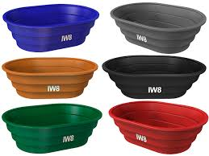

Essas caixas d'água funcionam como um ambiente controlado para a criação e a captura de peixes. Geralmente, são preenchidas com água, e os peixes são introduzidos para serem criados ou para serem capturados posteriormente. A água é oxigenada para garantir a sobrevivência dos peixes e é possível alimentá-los para promover o crescimento
essa caixas d´agua que dao para criar peixes
